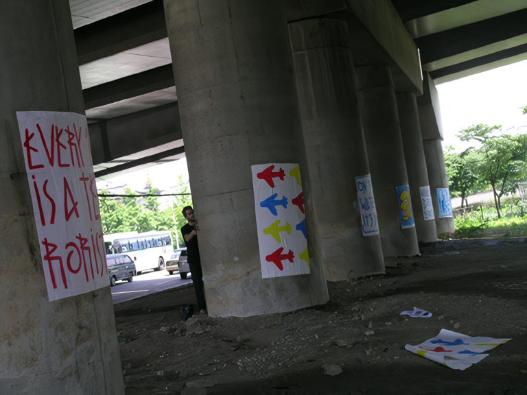
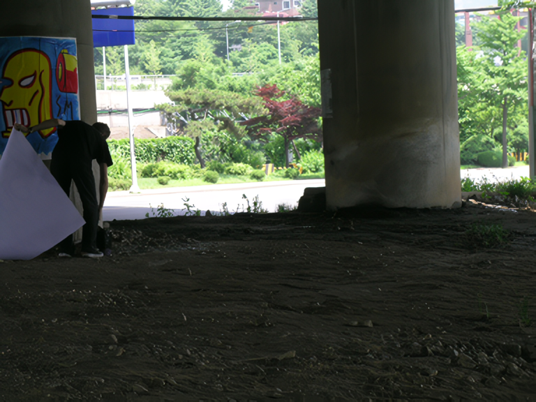
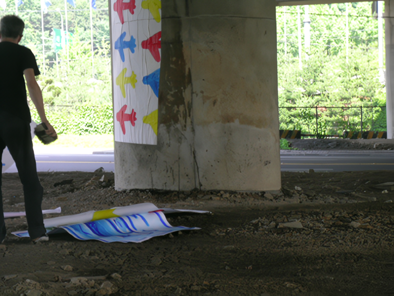
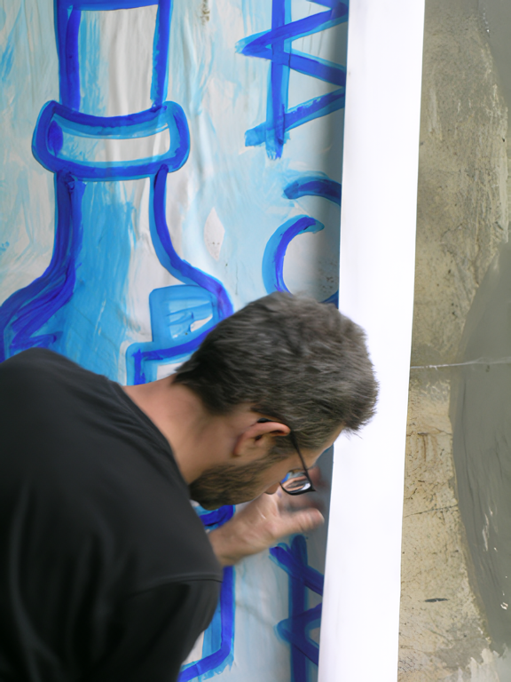
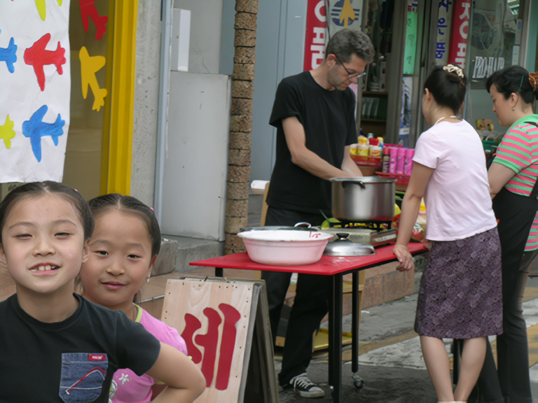
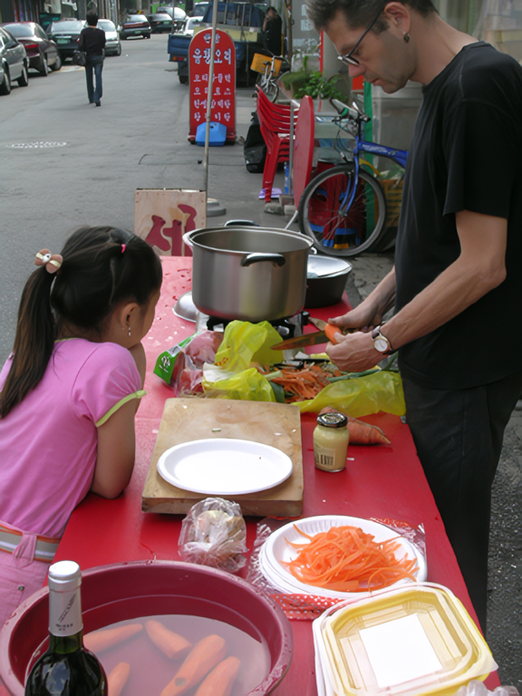
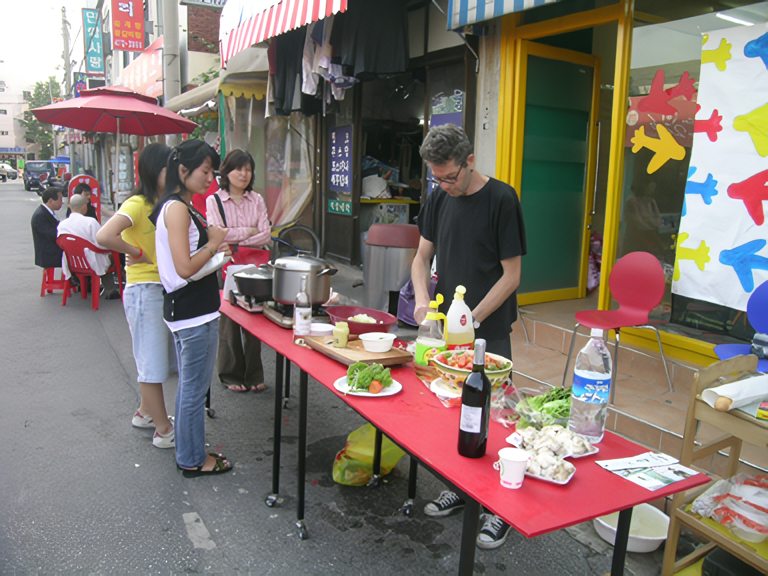
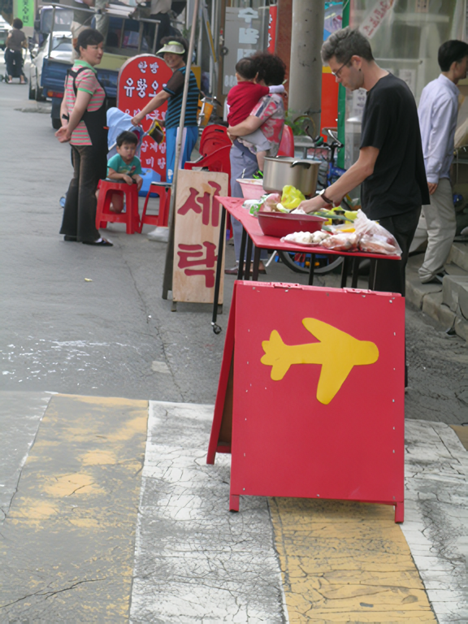
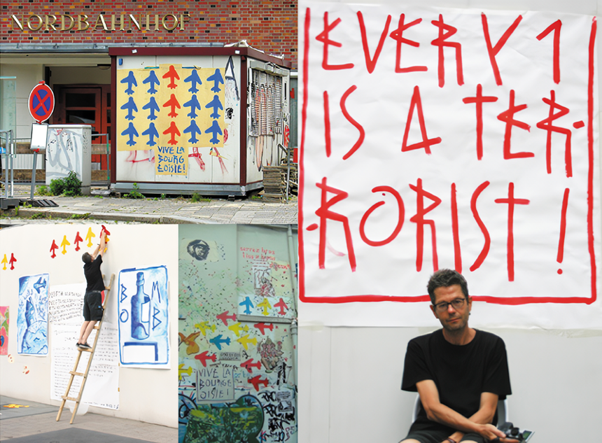

SP38 - The World is Everywhere
2006 스톤앤워터 개관 4주년 기념 프랑스 작가 초대전
2006_0615 ▶ 2006_0624

보충대리공간 스톤앤워터
경기도 안양시 만안구 석수2동 286-15번지
Tel. 031_472_2886
www.stonenwater.org
The World is Everywhere라는 주제는 SP38이 지난 몇 년간 유럽을 비롯한 한국에서 선보였던 <비행기>와 맥락을 같이 한다. 9.11 미국의 테러사건 이후에 SP38의 작품혹에서 등장하게 된 이 비행기는 분열, 파괴, 분노를 넘어 평화와 자유, 연대의 메시지를 싣고 자본의 심장으로 혹은 전 세계 어디로나 쉼 없이 날아간다. 베를린, 파리, 뮌스터, 휘겐, 서울, 광주, 안양 혹은 그야말로 우리는 그가 이동하는 곳 어디에서나 그의 비행기와 마주친다. 그곳은 전시장일 때도 있고 길거리의 빈벽일 때도 있다. 그의 비행기는 그 어느 것으로부터 구속도 없이 시공간을 횡단하며 우리에게 다가선다. 그리고 그의 비행기를 마주치게 되는 우리는 그의 비행기와 함께 또 다른 시공간으로의 상상의 여행이 시작됨을 느끼게 된다. 바로 평화, 자유, 연대로의 비행이 그와 함게 시작되는 것이다.
  
화가, 벽보 게시자, 행위가.
자유 자폐증자, 프랑스 노르망디 출신
1995년부터 독일 베를린의 재소자.
이제 행위는 어떤것도 의미하지 않는다.
우리는 그냥 해야할 뿐이다.
정치적으로 부당한 동요의 시대에는 우리의 한계를 확장 해야한다.
그리고 하늘을 정복 !
Painter, placards-sticker, performer.
Free autist, born in Normandy(France)
prisoner in Berlin(Germany) since 1995.
performance does not mean something, anymore.
we just have to do it !
In these politically improper and trouble times,
we have to enlarge our limits ...
... and occupy the sky !
“sqatter les murs isolés, les vitrines éteintes, le ciel ? ”
    
SP38 (Sylvain Perier)
프랑스 미술학교(보자르)를 자퇴한 후 프랑스를 비롯한 독일의 스콰앗에서 20년 이상 작품활동을 하고 있으며 현재 유럽 전역과 한국을 비롯한 전 세계를 무대로 작품을 선보이고 있다. 전시장, 도시의 빈 벽 등 작품과 일상이 소통할 수 있는 곳이면 어디라도 작품을 전시해온 SP38은 페인팅, 설치, 퍼포먼스 등 다양한 예술장르를 넘나든다. 서울, 파리, 베를린, 뮌스터 등에서 오아시스 프로젝트와 함게 작업한 바 있으며 한국에서는 광주비엔날레, 국제예술퍼포먼스 콩그레(서울), 고양 국제 미술제, 실험예술제 등의 초청으로 작품을 선보인바 있으며 2004년 안양천 프로젝트의 개막 퍼포먼스에 초청되었던 계기를 통해 다시금 스톤앤워터에서 전시회를 개최하게 되었다.